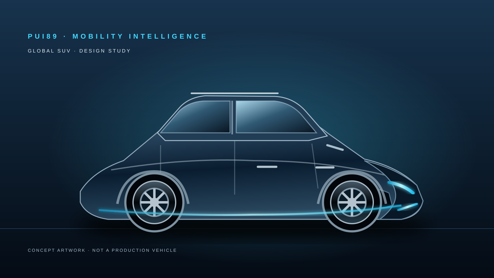

01 · Core Exterior Study
แนวทางตัวถังหลักสำหรับ SUV ขนาดกลาง เน้นสัดส่วนใช้งานจริงและเอกลักษณ์ PUI89
แพลตฟอร์มวิจัยระบบ AI สำหรับยานยนต์ที่ให้ความสำคัญกับความปลอดภัย มุ่งศึกษาการรับรู้สภาพแวดล้อม การวิเคราะห์อันตราย การติดตามสุขภาพยานยนต์ และคำแนะนำที่อธิบายเหตุผลได้ โดยผู้ขับขี่ยังคงเป็นผู้ควบคุมรถ
เปิด GitHub repository ↗ภาพศึกษาแนวทางตัวถัง SUV ขนาดกลาง 5 ประตู ภายใต้เอกลักษณ์ Deep Navy, Electric Cyan และ Titanium Silver เพื่อเปรียบเทียบภาษาการออกแบบ ไม่ใช่ข้อกำหนดรถผลิตจริง
แนวทางตัวถังหลักสำหรับ SUV ขนาดกลาง เน้นสัดส่วนใช้งานจริงและเอกลักษณ์ PUI89

แนวทางตกแต่งอีกแบบเพื่อสำรวจบุคลิกพรีเมียม โดยยังไม่ใช่แบบผลิตที่สรุปแล้ว
ภาพทั้งสองเป็นงานภาพเวกเตอร์เพื่อการศึกษา ยังไม่มีต้นแบบรถจริงหรือผลการทดสอบด้านวิศวกรรม
ระบบขับเคลื่อนที่แนะนำให้ศึกษาก่อน: Full Hybrid (HEV) แนวคิด SUV ขนาดกลาง 5 ประตูที่มนุษย์เป็นผู้ขับ โดยศึกษา Full HEV ก่อนและไม่ต้องพึ่งการเสียบปลั๊กชาร์จภายนอกเป็นประจำ ทั้งนี้เป็นทิศทางการออกแบบ ไม่ใช่การเลือกรถเพื่อผลิตหรือผลทดสอบระบบขับเคลื่อน
ออกแบบ PUI89 Core ให้ไม่ขึ้นกับระบบขับเคลื่อน และรองรับข้อมูลรถน้ำมัน HEV PHEV และ BEV ผ่าน adapter ที่มีเวอร์ชันและอ่านข้อมูลเท่านั้น
พัฒนาพื้นฐานซอฟต์แวร์ที่ใช้หลักฐานเป็นสำคัญ เพื่อประมวลผลข้อมูลสังเกตการณ์ ติดตามความไม่แน่นอน ประเมินอันตราย และนำเสนอคำแนะนำที่อธิบายเหตุผลได้สำหรับให้มนุษย์ตรวจสอบ
Observation → WorldState → Hazard Analysis → Safety Gate → Human-facing Advisory → Evidence Record
อยู่ในระยะเริ่มต้น ประกอบด้วยเอกสารวิจัยและต้นแบบสัญญาข้อมูล/กลไกความปลอดภัยระดับซอฟต์แวร์ ยังไม่มีรถที่ใช้งานได้จริง โมเดลรับรู้ที่ผ่านการตรวจสอบ การเชื่อมต่อยานยนต์แบบเวลาจริง หรือระบบความปลอดภัยที่ได้รับการรับรอง
ต้นแบบซอฟต์แวร์ระยะเริ่มต้นแนวคิด SUV ขนาดกลาง 5 ประตูสำหรับตลาดโลก เน้นสัดส่วนมั่นคง ใช้งานประจำวันสะดวก พร้อมเอกลักษณ์ Deep Navy, Electric Cyan และ Titanium Silver นี่คือทิศทางการออกแบบ ไม่ใช่ข้อกำหนดการผลิตที่สรุปแล้ว
SUV นี้เป็นแนวคิดยานยนต์ที่ให้ผู้ขับขี่เป็นผู้ควบคุม AI ของ PUI89 มุ่งวิเคราะห์ข้อมูลที่ได้รับอนุญาตและแสดงคำแนะนำพร้อมเหตุผล ไม่ได้เข้าควบคุมรถ
ศึกษาการแจ้งเตือนสิ่งกีดขวาง สภาพถนนผิดปกติและทัศนวิสัยต่ำ
แสดงข้อมูลอากาศและความเสี่ยงเส้นทาง พร้อมแหล่งข้อมูล เวลาและความไม่แน่นอน
เน้นเปลี่ยนเส้นทางหรือหยุดในจุดปลอดภัย หากไม่ทราบความลึกหรือกระแสน้ำ ให้ถือว่าไม่ทราบ ไม่ใช่ปลอดภัย และไม่มีการกล่าวอ้างความสามารถลุยน้ำ
ข้อมูลสุขภาพรถในอนาคตอาจสรุปสัญญาณผ่านการอ่านข้อมูลอย่างเดียว ไม่มีช่องทางสั่ง ECU, CAN, ระบบจัดการแบตเตอรี่หรือระบบขับเคลื่อน
อธิบายสาเหตุของคำเตือน หลักฐานที่สนับสนุน ข้อมูลที่ขาดและสิ่งที่ผู้ขับขี่ควรตรวจสอบ
อาจแสดงบริบทเหตุการณ์เพื่อช่วยให้ผู้ใช้ติดต่อหน่วยงานที่เหมาะสม ยังไม่มีการกล่าวอ้างการแจ้งเหตุอัตโนมัติ
จะเพิ่มระดับความก้าวหน้าเมื่อมีเอกสารและผลทดสอบที่ตรงกับด่านนั้น ลำดับต่อไปนี้เป็นแผนที่เสนอ ไม่ใช่การยืนยันว่าขั้นตอนในอนาคตเสร็จแล้ว
สถานะปัจจุบัน: พื้นฐานซอฟต์แวร์ระยะแรกและการวิจัยแนวคิด งานวิศวกรรมรถจริงและการตรวจสอบทางกายภาพยังเป็นงานในอนาคต
สแกนเพื่อเปิดหน้าเว็บไซต์โครงการภาษาไทยนี้โดยตรง เป็นภาพ QR Code แบบคงที่ที่โฮสต์บนเว็บไซต์ PUI89

วันที่ทบทวนล่าสุด: 8 พฤศจิกายน 2026 · รอบการทบทวน: พฤศจิกายน 2026
จุดสีใช้แยกมิติการพัฒนา ไม่ได้หมายถึงการรับรองหรือการดำเนินงานที่เสร็จสมบูรณ์
สถานะ: ● เผยแพร่กรอบแนวทางแล้ว · ● รอทบทวนหลักฐานเฉพาะโครงการ · ● ยังไม่มีหลักฐาน/ยังไม่ประเมิน
เป็นข้อเสนอเพื่อพัฒนาเท่านั้น การเพิ่มระดับความพร้อมต้องมีหลักฐานใน repository ผลทดสอบที่ทำซ้ำได้ หรือการตรวจสอบภายใต้การควบคุม ซอฟต์แวร์ผ่านการทดสอบไม่ได้ยืนยันความปลอดภัยหรือการรับรองผลิตภัณฑ์จริง
สถานะทางวิศวกรรม PUI89
ความสมบูรณ์ของโครงการ: รอการประเมินระดับอย่างเป็นทางการ โดยยังไม่มีการกล่าวอ้างคะแนนหรือเปอร์เซ็นต์ความสำเร็จ
จะประเมินตัวชี้วัดเมื่อมีรายงานลงวันที่ พร้อมหลักฐานจาก repository การทดสอบที่ทำซ้ำได้ และการตรวจสอบตามความเหมาะสม ขีดสีใช้ระบุหมวดการประเมินเท่านั้น ไม่ใช่คะแนน
มาตรฐานหลักฐาน PUI89
PUI89 AI Global SUV — ยังไม่มีคะแนน
จำนวนรายงานประเมินความแข็งแกร่งที่เสร็จสมบูรณ์และมีหลักฐาน: 0 รายการ ตัวเลขนี้หมายถึงจำนวนรายงาน ไม่ได้หมายความว่าไม่มีการพัฒนาหรือทดสอบ
น้ำหนักการประเมิน: ความสามารถทางเทคนิค 25 · การทดสอบและหลักฐาน 25 · ความปลอดภัยและความน่าเชื่อถือ 20 · วุฒิภาวะทางวิศวกรรม 15 · เอกสารและการทำซ้ำผล 10 · การตรวจสอบในโลกจริง 5
จะแสดงคะแนนเมื่อมีรายงานที่ระบุวันที่ ขอบเขต เวอร์ชัน หลักฐาน ข้อค้นพบ ข้อจำกัด และขั้นตอนถัดไปเท่านั้น แนวคิด ฟีเจอร์ที่วางแผนไว้ และการทดสอบที่ยังไม่ได้รันจะไม่ได้คะแนน ผลจำลองไม่ใช่หลักฐานยืนยันประสิทธิภาพในโลกจริง